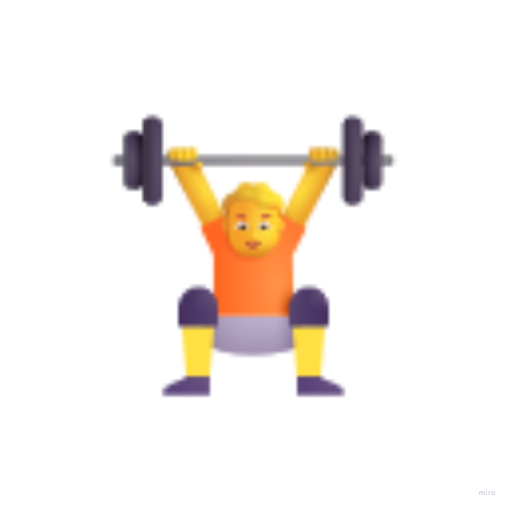

피벗을 기준으로 작은 값과 큰 값을 분할해 재귀적으로 정렬. 평균 시간복잡도는 O(n log n).
배열을 반으로 나누고 정렬한 후 병합. 안정 정렬이며 시간복잡도는 항상 O(n log n).
LIFO(후입선출) 구조. push, pop 메서드를 사용.
push
pop
FIFO(선입선출) 구조. enqueue, dequeue 메서드를 사용.
enqueue
dequeue
정렬된 배열에서 중간값과 비교하며 탐색. 시간복잡도는 O(log n).